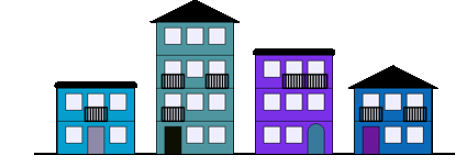

TP tests & bugs⚓︎
Source
Date : 15/10/2020 - Ensemble Scolaire Niort
- Antoine MAROT
- David SALLÉ
- Julien SIMONNEAU
Ce document est mis à disposition selon les termes de la licence Creative Commons BY-NC-SA 4.0
Table des matières
1 - PizzaError
2 - Chasse aux bogues
3 - Tests unitaires
3.1 - Classe Rectangle
3.2 - Classes du projet solitaire
4 - Optimisation et performances
4.1 - Chasse aux performances
4.1.1 - Chronométrage
4.1.2 - Première optimisation idiomatique
4.1.3 - Seconde optimisation algorithmique
4.2 - Profilage
1 - PizzaError⚓︎
L’entreprise Pizza des conches souhaiterait créer une sorte de “drive” automatique pour ses clients afin qu’ils puissent commander en ligne une pizza selon les stocks disponibles.
Un stagiaire a déjà commencé l’écriture d’un programme prototype.
Télécharger pizza_drive.py 
Cependant comme vous allez pouvoir le constater, le programme est largement perfectible :
- mauvaise gestion des saisies (caractères VS entier)
- commande de pizza malgré les stocks vides
- plantage lorsque l’on commande la pizza 3
A l’aide des exceptions, rendez ce programme plus robuste et plus ergonomique pour le client, c’est à dire sans plantage inopiné.
2 - Chasse aux bogues⚓︎
Pour chacun des scripts :
- trouvez l’origine du bogue
- proposez un correctif pour le rendre fonctionnel
bogue 00
Les types ne sont pas vérifiés dans doubler() et dans la saisie.
Comme l'opérateur * fonctionne aussi bien avec des string qu'avec des int, il ne retourne
aucune erreur mais un résultat erroné.
>>> "3" * 2
'33'
>>> 3 * 2
6
def doubler(x):
return x * 2
def tripler(y):
return y * 3
nombre = int(input("Saisir un nombre : ")) # Ajout de int() pour avoir un int
print( tripler(doubler(nombre)) )
bogue 01
L'erreur vient d'un mauvais choix d'opérateur. Ici on utilise = au lieu de += pour faire la concaténation
nouveau_mot = mot[i] + "_"
Il suffit donc de modifier cette ligne ainsi :
nouveau_mot += mot[i] + "_"
bogue 02
Cette ligne est fautive, car le résultat de la suppression de la voyelle ne fonctionnera que pour la dernière voyelle du mot.
nouveau_mot = mot.replace(lettre, "")
nouveau_mot = mot
les_voyelles = ('a', 'e', 'i', 'o', 'u')
for lettre in mot.lower():
if lettre in les_voyelles:
nouveau_mot = nouveau_mot.replace(lettre, "")
return nouveau_mot
bogue 03
Le problème vient ici de la méthode cloner().
def cloner(notes):
"""Clone un tableau de notes passé en paramètre"""
nouvelles_notes = notes # notes et nouvelles_notes sont en fait le même tableau
return nouvelles_notes
En écrivant...
nouvelles_notes = notes
Pour effectuer une vraie copie de tableau, il faut utiliser le module copy
import copy
nouvelles_notes = copy.deepcopy(notes)
bogue 04
Le calcul ne s'effectue pas correctement car l'opérateur utilisé est celui de la comparaison == plutôt que celui de l'affectation =
total == total + farine # Mauvaise version
total = total + farine # Bonne version
La fonction malaxer() devra être réécrite comme ci-dessous :
def malaxer(farine, oeufs, chocolat):
"""Malaxe les 3 ingrédients dans certaines quantités exprimées en grammes"""
# Poids total de la pate
total = 0
# Ajout et malaxage de tous les ingrédients
total == total + farine
total == total + oeufs
total == total + chocolat
# On retourne le poids total de la pate
return total
bogue 05
Ici, il s'agit juste d'un problème d'indentation
if age < 18:
pouvoir_voter = False
else:
pouvoir_voter = True
pouvoir_parier = True # Mal indentée
On pourra le corriger ainsi
if age < 18:
pouvoir_voter = False
else:
pouvoir_voter = True
pouvoir_parier = True # bien indentée
bogue 06
Il faut déclarer la variable poids en global dans la fonction modifier_poids() avec : global poids
def modifier_poids(nouveau_poids):
global poids
poids = nouveau_poids
print("Mon nouveau poids est de %d kg" % (poids))
https://stackoverflow.com/questions/929777/why-does-assigning-to-my-global-variables-not-work-in-python
et en image : https://www.youtube.com/watch?v=50HJA4KpPqU
bogue 07
La condition du while != est trop restrictive et la limite jamais atteinte => on obtient une boucle infinie. Mieux vaut utiliser l'opérateur < comme ci-dessous :
while nombre < limite:
print(f"{nombre} ", end="")
nombre += 2
bogue 08
Pas de test d'égalité sur des flottants !!
L'affichage arrondi à 2 digits après la virgule ci-dessous cache l'erreur de calcul
print(f"J'accélère : acceleration_fusee = {acceleration_fusee:.2f}")
print(f"J'accélère : acceleration_fusee = {acceleration_fusee}")
def verifier_et_conseiller(acceleration):
delta = 0.001
if acceleration > (1.0 - delta) and acceleration < (1.0 + delta):
print("\033[30;32mOK, accélération de 1G\033[00m")
if acceleration > (2.0 - delta) and acceleration < (2.0 + delta):
print("\033[30;33mAttention, accélération de 2G \033[00m")
if acceleration > (3.0 - delta) and acceleration < (3.0 + delta):
print("\033[30;31mUrgence, accélération de 3G, veuillez freiner\033[00m")
3 - Tests unitaires⚓︎
A votre tour de mettre en œuvre les tests unitaires :
- sur une classe
Rectangleà réaliser - [Facultatif]sur les classes
Carte,JeuCarte,Pile,Fileréalisées précédemment.
note : Dans le cas de pile et File, les tests unitaires peuvent servir aux deux implémentations faites en cours.
Vous utiliserez la méthode simple avec le mot clef assert, puis la librairie unittest dans un second temps.
3.1 - Classe Rectangle⚓︎
L’entreprise GEOFORME développe des logiciels et outils de dessin industriel. Le développeur avant vous dans le service a commencé à développer une classe Rectangle dans le fichier rectangle.py. Il a principalement défini l’API de la classe et positionné des TODO comme ci-dessous dans chaque méthode :
# TODO : compléter le code de la méthode
pass
Si vous détectez des problèmes potentiels, vous pourrez les signaler en levant une Exception comme ci-dessous :
#Un problème potentiel
if probleme == True :
raise Exception("Un probléme est survenu")
Le responsable du service vous demande de finir de coder cette classe et d’écrire les tests unitaires qui permettront de la valider et de l’intégrer dans le reste du logiciel de dessin industriel. Concernant les tests unitaires, vous créerez 2 versions et donc 2 fichiers :
tests_rectangle_assert.py: version avec le mot-clef asserttests_rectangle_unittest.py: version avec la librairie unittest
4.2 - Classes du projet Bataille [facultatif]⚓︎
Appliquer les tests unitaires sur les classes du projet carte, Jeu de carte, Pile, File.
4 - Optimisation et performances⚓︎
Johnny BEGOOD participe en ce moment à un challenge algorithmique sur une plate-forme en ligne. Pour le problème n°10, il doit écrire un programme qui affiche le 2000ième nombre premier. Il a écrit un code qui fonctionne parfaitement bien (le résultat est 17389), mais la plate-forme a fixé une limite de temps d’exécution (<100ms) pour valider le challenge et son programme est trop lent.
4.1 - Chronométrage⚓︎
A l’aide de la fonction perf_counter() du module time, mesurez et affichez le temps d’exécution de son programme et plus particulièrement de sa fonction rechercher_nieme_nombre_premier().
Notez le résultat moyen obtenu sur 3 exécutions et confirmez le refus par la plate-forme.
4.2 - Première optimisation idiomatique⚓︎
Harry a entendu parler qu’en Python les boucles for étaient plus performantes que les boucles while.
Créer un nouveau script programme_v01.py, copiez/collez le code de la version v00 et modifiez le code de sa fonction etre_premier() pour remplacer la boucle while par une boucle for.
Chronométrez le temps d’exécution obtenu et notez le résultat moyen sur 3 lancement. Comparez le temps entre les versions v00 et v01. Est-ce suffisant ?
4.3 - Seconde optimisation algorithmique⚓︎
Après avoir lu la page wikipédia consacrée aux nombres premiers, il découvre que le plus grand facteur possible pour un nombre non premier \(N\) est \(\sqrt{N}\).
Créez un nouveau script programme_v02.py à partir de la précédente version et modifiéz la limite de la boucle for de n-1 à sqrt(n) (penser à importer le module math).
Chronométrez cette nouvelle version comme précédemment et conclure.
4.4 - Profilage⚓︎
Effectuez un profilage du script de départ programme_v00.py et notez les résultats :
- pour la fonction
rechercher_nieme_nombre_premier():- nombre d’appels
- temps moyen d’exécution
- temps total d’exécution
- pour la fonction
etre_premier():- nombre d’appels
- temps moyen d’exécution
- temps total d’exécution
Travail ensemble ... Pas si simple

Télécharger Dessiner ma rue
@Crédit : Ce projet a été proposé par Adrien Willm comme TP puis transformé en projet de groupe par Sébastien Chanthery.